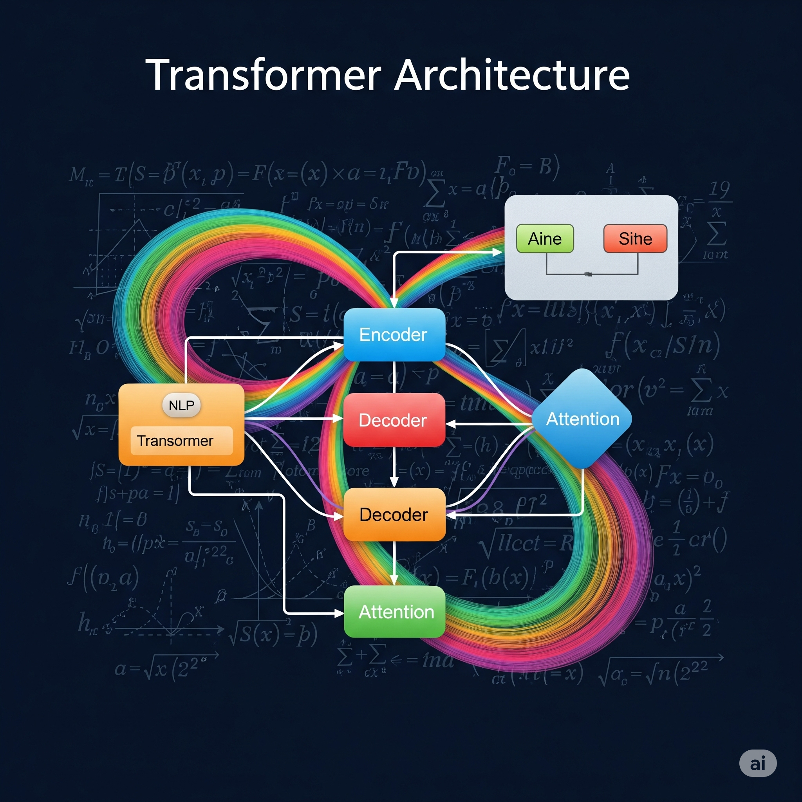

Transformers and Their Impact on NLP

Transformers have radically shifted the landscape of Natural Language Processing (NLP) by introducing an architecture that excels at handling long-range dependencies in sequential data. Unlike traditional recurrent neural networks (RNNs) or convolutional neural networks (CNNs), Transformers rely entirely on attention mechanisms to draw global dependencies between input and output.
Key Innovations
- • Attention mechanism: This core component enables the model to focus selectively on relevant words in a sentence, regardless of their position, allowing for a more nuanced understanding of context.
- • Parallel processing: By removing the sequential nature of RNNs, Transformers can process entire input sequences simultaneously, leading to significantly faster training times and better scalability on large datasets.
- • Positional Encoding: Since attention mechanisms don't inherently capture word order, positional encodings are added to the input embeddings to provide information about the relative or absolute position of tokens in the sequence.
Applications & Successes
The versatility of Transformers has led to their widespread adoption across various NLP tasks:
- ✓ Machine Translation: Achieving state-of-the-art results in translating text between languages.
- ✓ Text Summarization: Generating concise summaries of longer documents.
- ✓ Question Answering: Accurately extracting answers from given texts based on questions.
- ✓ Text Generation: Creating coherent and contextually relevant human-like text.
Notable Models
Several influential models have been built upon the Transformer architecture, each pushing the boundaries of what's possible in NLP:
- BERT (Bidirectional Encoder Representations from Transformers) Developed by Google, BERT is pre-trained on a large corpus of text and can be fine-tuned for various downstream tasks.
- GPT (Generative Pre-trained Transformer) From OpenAI, GPT models are renowned for their impressive text generation capabilities, producing highly coherent and creative content.
- T5 and XLNet Other significant Transformer-based models that have contributed to advancements in natural language understanding and generation.
"The Transformer architecture continues to evolve, with ongoing research exploring its applications beyond NLP, including computer vision and reinforcement learning. Its impact on the field of AI has been profound, paving the way for more powerful and versatile language models."